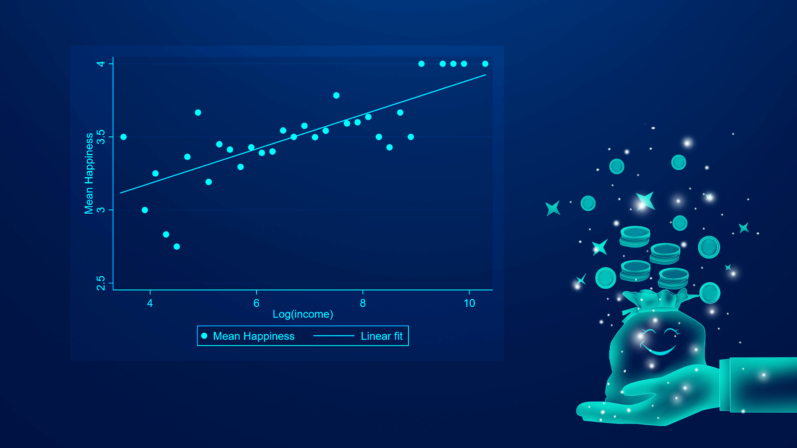
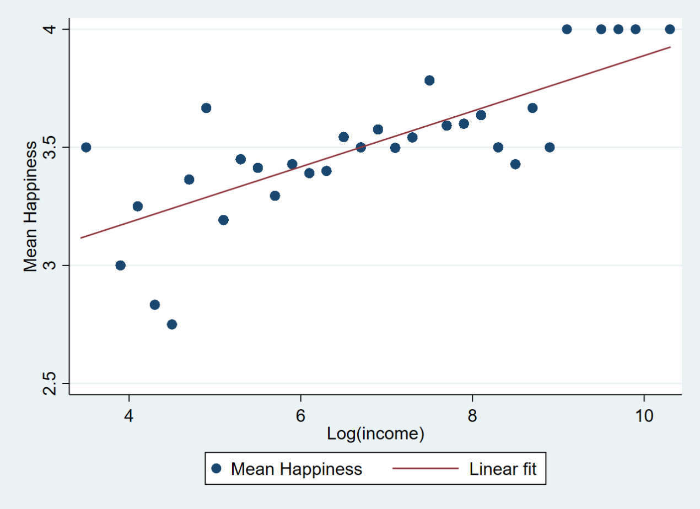

Proofread ByAdrian Cremin, Yingying XIA
Photo By Yan QIU
One fundamental issue in economic, psychological, and social sciences is whether and how much income truly brings happiness. Although individual income is generally positively associated with happiness within a country, few studies answer whether such an association reflects a causal effect of individual income on happiness and identify the size of such an effect.

Associate Professor Maoliang Ye from the Department of Applied Economics at the School of Business at the Southern University of Science and Technology (SUSTech), in collaboration with Professor Junsen Zhang from Zhejiang University and Professor Hongbin Li from Stanford University, recently published a paper that explores one fundamental and controversial issue in social sciences such as economics and psychology: whether and how much individual income truly brings happiness.
Their work, entitled “Twins, income, and happiness: Evidence from China”, has been published in the prestigious interdisciplinary scientific journal Proceedings of the National Academy of Sciences (PNAS).
This study is unique in its use of twin data to investigate the income–happiness relationship, and is one of the few studies to address both omitted variable bias and measurement error bias. Additionally, it is likely the first time in the literature studying the effect of income on happiness to use sibling-reported income as an instrument to address measurement errors.
It finds that income has a much larger effect than previous estimates: doubling income boosts the four-scale emotional well-being (measured by the frequency of feeling happy) by 0.26 scales or 0.37 standard deviations, or the likelihood of “often feeling happy” by 16.3 percentage points.
Heterogeneity analyses suggest that income matters most for males and the middle-aged. The heterogeneous results regarding gender may reflect the different gender roles in Chinese society: males tend to bear more of the financial responsibilities, while females bear more of the family responsibilities. The heterogeneous results in age groups are consistent with the well-established pattern in the literature that those in middle-age are least happy, probably due to their heaviest family and financial burdens, for which a decent income is crucial to manage daily life and maintain happiness. However, the results regarding age groups are only suggestive due to sample limitations.
These results emphasize the importance of income maintenance for individuals’ well-being, which holds significant implications for rapidly developing countries and transitional societies and sheds light on social welfare policies and social security systems. Methodologically, it also highlights the importance of accounting for various biases when studying the relationship between socioeconomic status and subjective well-being.

Figure 1. Mean happiness by bins of individual monthly logarithmic income for all twins
Subjective well-being studies span across disciplines such as economics, psychology, and social sciences. Within economics, it can be attributed to behavioral economics, demography and labor economics, development economics, and public economics. Subjective well-being studies can help explore the fundamental concepts of individual preferences and utility functions, which are essential in economics. They can also shed light on how to measure and improve the ultimate goal of human welfare.
In the field of happiness studies, Prof. Ye has accumulated considerable research experience. He has successfully led research projects supported by the Ministry of Education, authored numerous relevant papers (some of which were published in renowned international journals), and continues to delve deeper into related theoretical foundations, statistical and econometric methodologies, and their applications. Furthermore, he aims to foster deeper collaborations with domestic and international scholars in the field.
This paper was published in the Economics section of PNAS, whose editors and editorial board members are leading international economists. The handling editor for this submission is an authoritative expert in the relevant methodology and commented, “Congratulations on this original research, and on the well-written exposition it contains.” Renowned international scholars on happiness studies and happiness economics, such as Clark Andrew, David Cesarini, Jan-Emmanuel De Neve, Paul Frijters, Caspar Kaiser, Erzo F.P. Luttmer, Nattavudh Powdthavee, and Dan Sacks, have also acknowledged and congratulated him on the publication of this study.
Prof. Maoliang Ye is the first author of this paper, and SUSTech is the first affiliation.
This study was partially supported by the Shenzhen Philosophy and Social Science Grant, National Natural Science Foundation of China (NSFC), Guangdong Natural Science Foundation, and the Key Program of the National Natural Science Foundation of China.
Paper link: https://doi.org/10.1073/pnas.2221884120